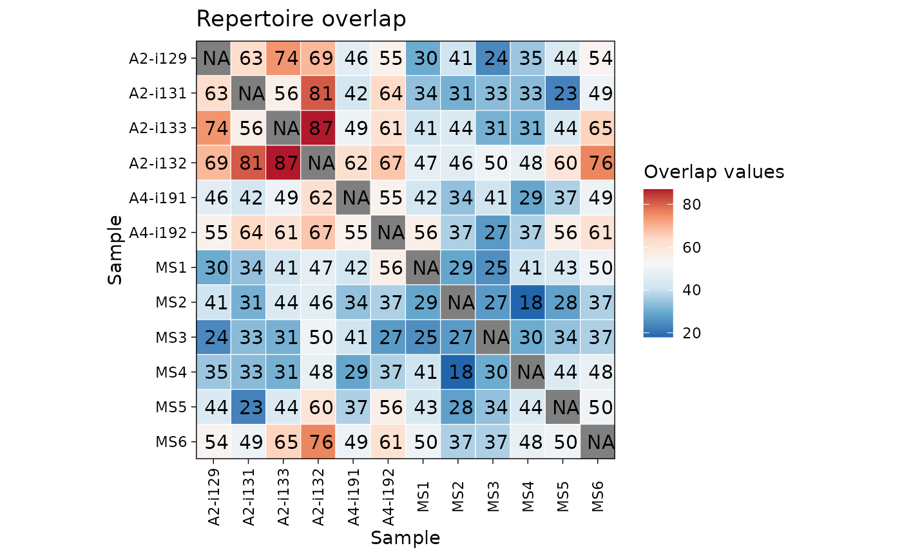
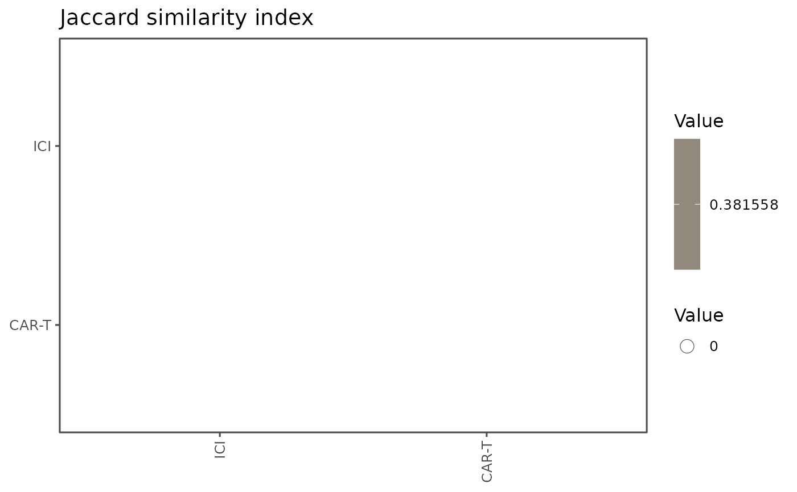

![[Deprecated]](figures/lifecycle-deprecated.svg)
Output from every function in immunarch can be visualised with a
single function - vis. The vis automatically detects
the type of the data and draws a proper visualisation. For example, output
from the repOverlap function will be identified as repertoire overlap values
and respective visualisation will be chosen without any additional arguments.
See "Details" for the list of available visualisations.
Details
List of available visualisations for different kinds of data.
Basic analysis:
Exploratory analysis results (from repExplore) - see vis.immunr_exp_vol;
Clonality statistics (from repClonality) - see vis.immunr_homeo.
Overlaps and public clonotypes:
Overlaps (from repOverlap) using heatmaps, circos plots, polar area plots - see vis.immunr_ov_matrix;
Overlap clustering (from repOverlapAnalysis) - see vis.immunr_hclust;
Repertoire incremental overlaps (from repOverlap) - see vis.immunr_inc_overlap;
Public repertoire abundance (from pubRep) - vis vis.immunr_public_repertoire.
Gene usage:
Gene usage statistics (from geneUsage) using bar plots, box plots - see vis.immunr_gene_usage;
Gene usage distances (from geneUsageAnalysis) using heatmaps, circos plots, polar area plots - see vis.immunr_ov_matrix;
Gene usage clustering (from geneUsageAnalysis) - see vis.immunr_hclust.
Diversity estimation:
Diversity estimations (from repDiversity) - see vis.immunr_chao1.
BCR analysis:
Clonal tree (from repClonalFamily) - see vis.clonal_family and vis.clonal_family_tree.
Advanced analysis:
Repertoire dynamics (from trackClonotypes) - see vis.immunr_dynamics;
Sequence logo plots of amino acid distributions (from kmer_profile) - see vis_seqlogo;
Kmers distributions (from getKmers) - see vis.immunr_kmer_table;
Mutation networks (from mutationNetwork) - Work In Progress on vis.immunr_mutation_network;
CDR3 amino acid properties, e.g., biophysical (from cdrProp) - Work In Progress on vis.immunr_cdr_prop.
Additionaly, we provide a wrapper functions for visualisations of common data types:
Any data frames or matrices using heatmaps - see vis_heatmap and vis_heatmap2;
Any data frames or matrices using circos plots - see vis_circos.
See also
fixVis for precise manipulation of plots.
Examples
# Load the test data
data(immdata)
# Compute and visualise:
ov <- repOverlap(immdata$data)
vis(ov)

gu <- geneUsage(immdata$data)
vis(gu)
#> Using Names as id variables
#> Warning: Removed 15 rows containing missing values or values outside the scale range
#> (`geom_bar()`).

dv <- repDiversity(immdata$data)
vis(dv)